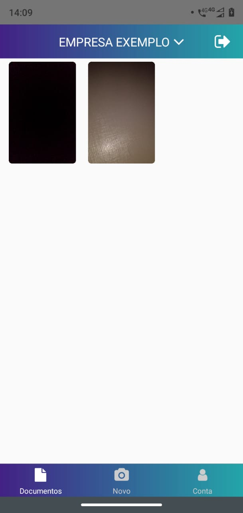

Documentos¶ Visualizando documentos¶ A opção documentos permite a visualização de todos dos documentos enviados pelo usuário. Ao clicar em um documento, é possível visualiza-lo melhor.  Última atualização: 3 de novembro de 2020